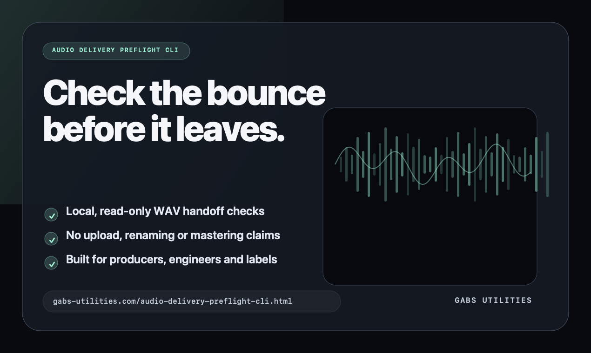
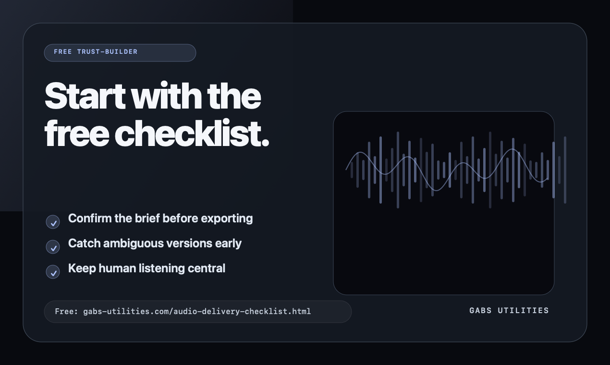
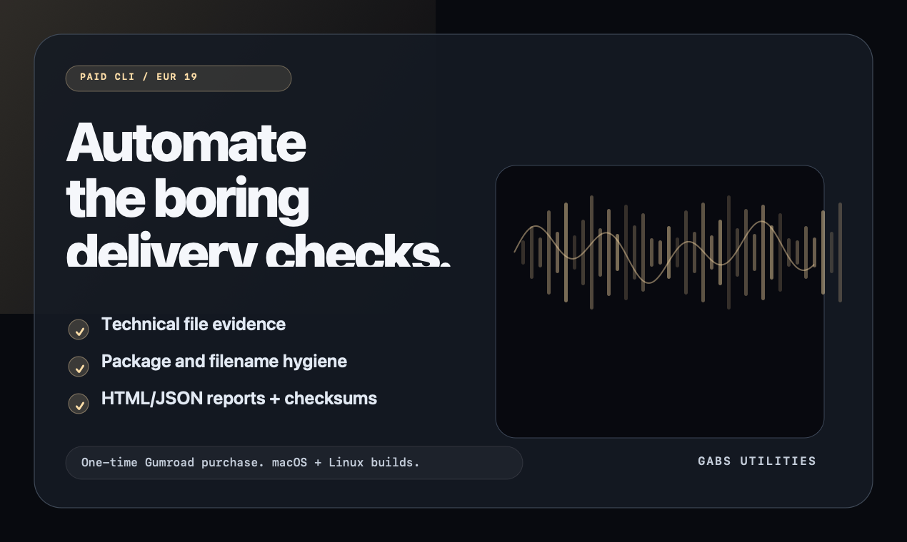
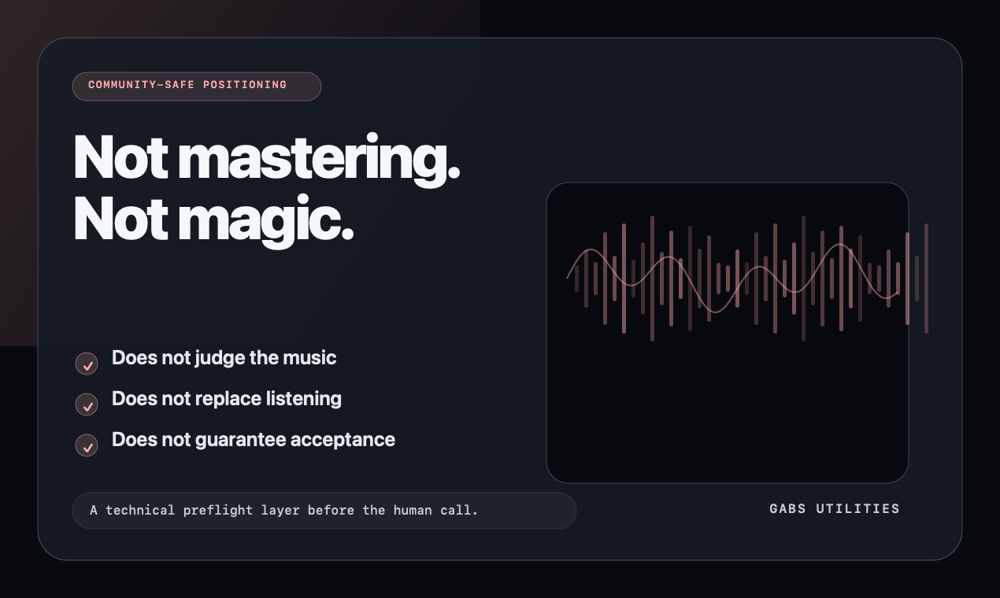

Press / launch / Product Hunt kit
Audio Delivery Preflight CLI press kit.
A single source for factual product copy, launch images and community-safe positioning. Use it for Product Hunt, product directories, audio-tech tips and careful community feedback posts.
Public assets · no signup
The productA local command-line checker for bounced WAV delivery folders before client, label or release handoff.
The safe angleLead with the free checklist and sample report. Mention the paid CLI as automation for repeated work.
The boundaryNot mastering, not a distributor validator, not a replacement for listening or engineering judgement.
Quick facts
NameAudio Delivery Preflight CLI
TaglineCheck bounced WAV delivery folders before client or label handoff.
Price€19 one-time purchase via Gumroad
PlatformsmacOS Apple Silicon, macOS Intel, Linux amd64
Primary URLhttps://gabs-utilities.com/audio-delivery-preflight-cli.html
MakerGabriel García Alonso, Berlin
Launch gallery assets
These four images are 1270 × 760 PNGs, suitable for a Product Hunt-style gallery. Use them in this order.




Product Hunt-ready fields
Name
Audio Delivery Preflight CLI
Tagline
Check bounced WAV delivery folders before client or label handoff.
Description
A local command-line checker for audio delivery folders: WAV evidence, delivery hygiene, report output and checksum workflow. Built for producers, engineers and labels who want fewer boring handoff mistakes.
Topics
Music
Developer Tools
Productivity
Pricing
Paid — €19 one-time Gumroad purchase
Maker first comment
Hey, I’m Gabriel.
I built this from a recurring studio problem: delivery folders often fail on boring details before anyone even gets to the listening judgement.
Audio Delivery Preflight CLI is a local, read-only checker for bounced WAV handoffs. It does not master, upload, rename or judge the music. It checks the technical package so the human can focus on the actual work.
Free checklist:
https://gabs-utilities.com/audio-delivery-checklist.html
Sample report:
https://gabs-utilities.com/audio-delivery-preflight-sample-report.html
I’d love feedback from producers, engineers, labels and developer-tool people: which checks are missing, what wording feels unclear, and what would make this safer or more useful in a real handoff workflow?
Community-safe post
I made a free WAV delivery handoff checklist for checking bounced folders before client, label, archive or release delivery:
https://gabs-utilities.com/audio-delivery-checklist.html
It covers boring-but-real mistakes: unclear brief, ambiguous versions, missing credits/metadata, unchecked archives, undocumented format assumptions and skipped listening passes.
I also built a paid local CLI that automates part of this, but I’d genuinely like feedback on the checklist first: what checks are missing, and what wording would make it more useful for engineers/producers?
Do not overclaim
Do not call this mastering, AI audio judgement, distributor validation, automated release approval, or a replacement for professional listening. The credible claim is narrower and stronger: it catches mechanical handoff problems before the human decision.
{kind=link}
{kind=link}
{kind=link}
{kind=link}